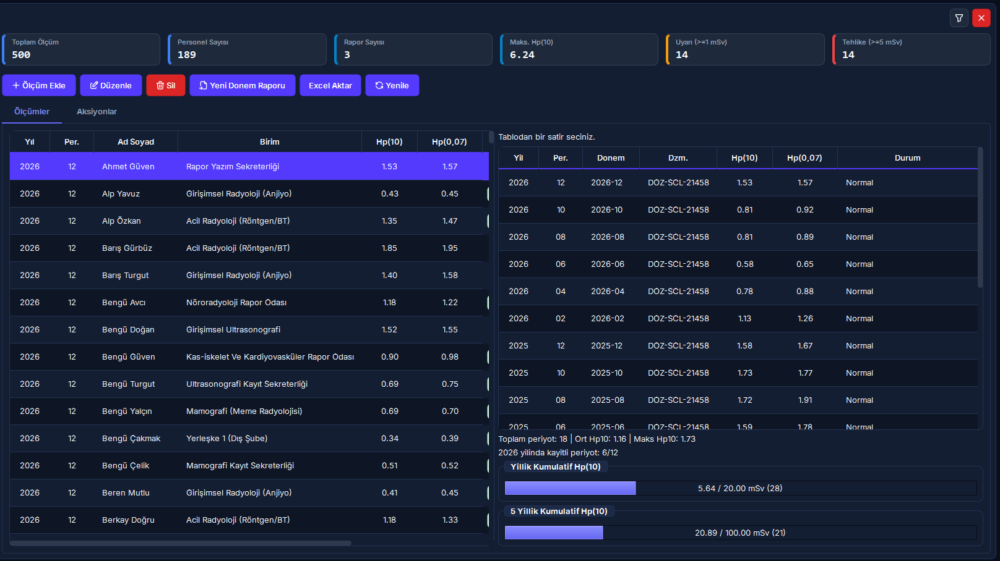
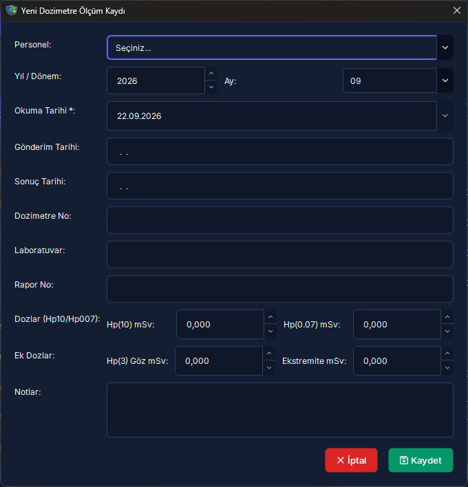
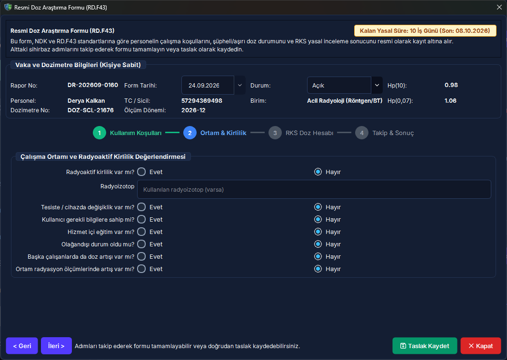
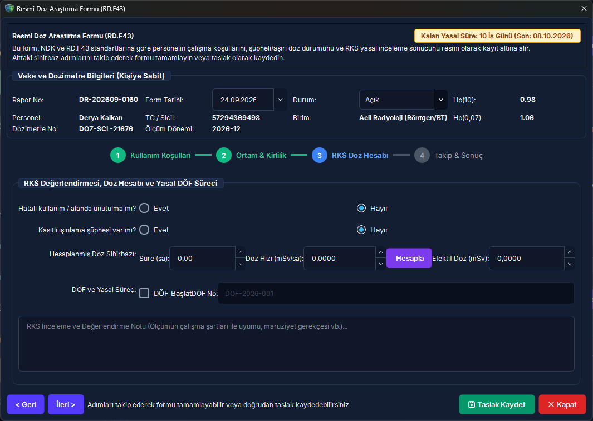
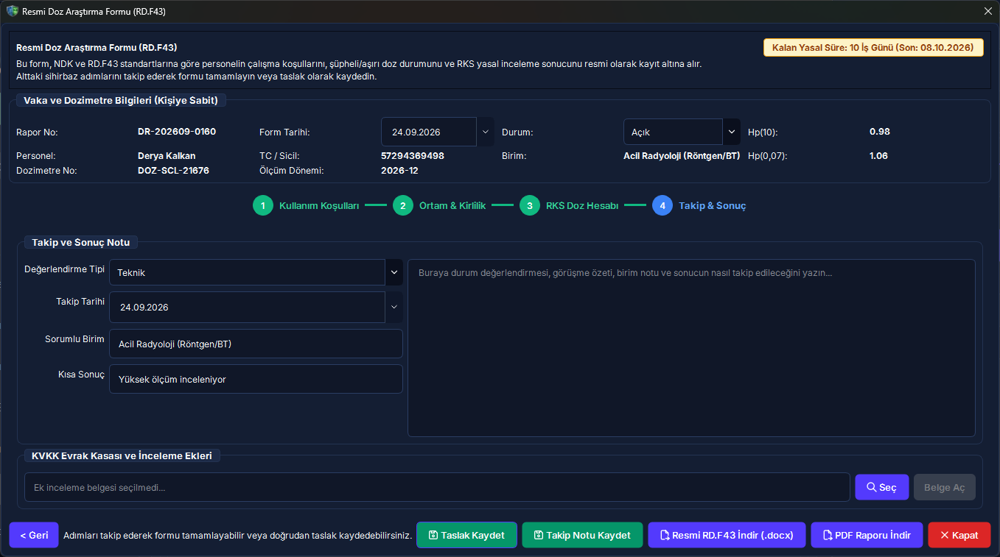
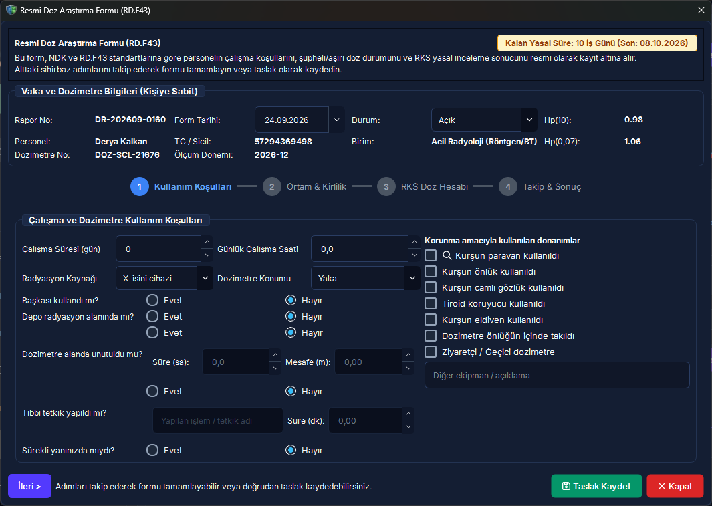

12. Kişisel Dozimetre Takibi ve RD.F43 Doz Aşımı Araştırması
Radyasyonla çalışan personelin mesleki maruziyet kayıtlarını, laboratuvar raporu (TENMAK, RADAT, Excel) içe aktarımını, kümülatif yasal limitleri ($H_p(10)$ derin doz ve $H_p(0.07)$ yüzey dozu), inceleme eşiğini aşan vakalarda 10 iş günü içinde tanzimi zorunlu resmi RD.F43 Doz Araştırma Formu sürecini ve RKS net maruziyet hesaplama algoritmasını yöneten merkezi modüldür.
Tek ölçümde bu eşik aşıldığında resmi RD.F43 araştırma formu açılır.
Takvim yılı toplamı 20 mSv'yi aşarsa aktif radyasyon nöbetleri bloke edilir.
Gebelik süresi boyunca alınabilecek azami toplam dozdur; aşımda idari görev zorunludur.
Bildirim tarihinden itibaren NDK onaylı RD.F43 formunun kapatılması gereken yasal mühlet.
Sistemimiz TENMAK, RADAT ve Genel Excel/CSV şablonlarını doğrudan tanır. Kurumunuzun çalıştığı akredite dozimetre merkezi veya hastane içi laboratuvarı bu formatların dışında farklı bir dosya raporu üretiyorsa, örnek bir dozimetre raporu ile yazılım destek ekibimize başvurunuz. Yazılım destek ekibimiz kurumunuza özel ayrıştırıcıyı sisteme hızla entegre edecektir.
Vizyonder Hızlı Karar Reçetesi (Dozimetre & RKS Özeti)
2. Arayüz Bileşenleri ve 5N1K Tablosu
Dozimetre Takibi modülündeki ekran kontrolleri, butonlar ve filtreleme araçlarının işlevsel kullanım kılavuzu:
| Bileşen / Buton | Türü | Ne İşe Yarar? (Ne?) | Kim Kullanır? (Kim?) | Ne Zaman Kullanılır? (Ne Zaman?) | Nerede Yer Alır? |
|---|---|---|---|---|---|
| [Laboratuvardan İçe Aktar] | Buton | TENMAK/RADAT/Excel doz raporlarını 3 adımlı sihirbazla içeri aktarır. | RKS / Dozimetre Sorumlusu | Aylık dozimetre kaset sonuçları geldiğinde | Üst Araç Çubuğu |
| [Ölçüm Ekle] | Buton | Münferit veya Elektronik Kişisel Dozimetre (EPD) ara ölçümü kaydeder. | RKS / Süpervizör | Tekil acil ölçüm veya yeni kart girişinde | Üst Araç Çubuğu |
| [Dönem Filtresi] | Açılır Kutu | Tabloyu seçilen yıl ve döneme göre anında süzer. | Tüm Kullanıcılar | Geçmiş periyot kayıtları sorgulanırken | Filtre Paneli |
| [Dozimetre Tipi] | Açılır Kutu | Tüm Vücut, Yüzük/Ekstremite, Göz Lensi ve EPD türlerini ayrıştırır. | RKS | Ekstremite veya lens dozları denetlenirken | Filtre Paneli |
| [Aksiyon Başlat / Düzenle] | Buton | 2.0 mSv eşiğini aşan vaka için 4 adımlı resmi RD.F43 araştırma formu açar. | RKS / Kurum Amiri | Eşik aşımı veya doz anomalisi tespitinde | Aksiyonlar Sekmesi |
| [Doz Hesapla] | Buton | Unutulma veya tetkik şüphesinde RKS'nin maruziyet dozunu hesaplar. | RKS | Artefakt veya sahte aşım vaka analizinde | RD.F43 Diyaloğu (Adım 3) |
| [Resmi RD.F43 Word İndir] | Buton | NDK onaylı resmi araştırma tutanağını Jinja2 Word (.docx) olarak üretir. | RKS / Yönetici | Form imzaya veya NDK denetimine sunulacağında | RD.F43 Form Başlığı |
3. Laboratuvar Dosyası İçe Aktarma Sihirbazı (3 Adım)
Dozimetre servis sağlayıcısından gelen toplu Excel/CSV raporlarının sisteme aktarımı, kurum personelleriyle otomatik T.C. Kimlik / Barkod eşleştirmesi ve aşım alarmlarının üretilmesi akışı:

Dosya & Sağlayıcı Seçimi
Sağlayıcı açılır kutusundan TENMAK, RADAT veya Genel Excel seçilir. İlgili yıl ve dönem belirlenip [Gözat] butonu ile rapor dosyası seçilir.
Otomatik Eşleştirme & Önizleme
[Dosyayı Çözümle] butonuna basılır. Sistem dosyadaki T.C. Kimlik veya seri no değerlerini personellerle eşleştirir. Eşleşmeyen satırlar sarı renk uyarısıyla önizlenir.
Kayıt & Eşik Alarmı Tetikleme
[İçe Aktarımı Tamamla] tıklandığında satırlar veritabanına yazılır, kümülatif dozlar güncellenir ve $\ge 2.0\text{ mSv}$ kayıtlar için otomatik RD.F43 kuyruğu oluşturulur.
4. Dozimetre Kokpiti ve Manuel Ölçüm Girişi
Ana takip ekranı üzerindeki ölçüm satırları, kümülatif doz barları ve münferit ölçüm kaydı ekleme süreci:
Dozimetre Takip Kokpiti ve Doz Renk Skalası

- Yeşil (< 1.0 mSv): Güvenli normal arka plan / rutin maruziyet aralığı.
- Sarı (1.0 - 2.0 mSv): Dikkat eşiği; kişisel ortalama sapmaları takip edilir.
- Turuncu (2.0 - 5.0 mSv): İnceleme düzeyi aşımı; RD.F43 formu zorunludur.
- Kırmızı (≥ 5.0 mSv veya Yıllık ≥ 20 mSv): Kritik risk; çalışma blokajı uygulanır.
Manuel Dozimetre Ölçümü Ekleme

[Ölçüm Ekle] tıklandığında açılan bu modalda;
• Personel seçilir, dozimetre tipi (Tüm Vücut / Yüzük / Göz Lensi / EPD) belirlenir.
• $H_p(10)$ derin doz ve opsiyonel $H_p(0.07)$ yüzey dozu sayısal olarak girilir.
• Doz değeri 2.0 mSv eşiğini geçerse sistem anında uyarı vererek aksiyon sekmesine yönlendirir.
5. 4 Adımlı RD.F43 Doz Araştırma Formu Düzenleme ve RKS Doz Hesabı
Aylık 2.0 mSv eşiğini aşan ölçümlerde NDK mevzuatı gereği en geç 10 iş günü içinde düzenlenmesi yasal zorunluluk olan resmi Doz Araştırma Formu (RD.F43 / Form A-1) adımları:
Personel ve Koruyucu Donanım Bilgileri

Personelin çalıştığı birim, cihaz türü (Skopi, BT, Girişimsel vb.), haftalık çalışma saati ve koruyucu ekipman (kurşun önlük, tiroid koruyucu) kullanım durumu teyit edilir.
Çalışma Koşulları ve Olağan Dışı Durumlar

Ölçüm döneminde cihaz arızası, floroskopi tüp kilitlenmesi veya acil vaka yoğunluğu sorgulanır; dozimetrenin kurşun önlük altında mı üstünde mi taşındığı belgelenir.
Artefakt Tespiti ve RKS Maruziyet Hesabı

Artefakt / Sahte Aşım: Personel bizzat hasta olarak BT/Sintigrafi çektirmişse veya dozimetre şua odasında unutulmuşsa [Doz Hesapla] motoruyla mesafe ve süreye göre gerçek maruziyet hesaplanır ve sahte aşım personelin kütüğünden düşülür.
Gerçek Mesleki Aşım: Vaka mesleki kaza ise sistem kurumsal DÖF Takip Numarası girilmesini zorunlu tutar.
Karar, İmzalar ve Resmi RD.F43 Belgesi

Form onaylandığında sağ üstteki [Resmi RD.F43 Word İndir] butonuna tıklanır.
Sistem, kurum logosunu ve RKS/Kurum Amiri imza bloklarını içeren NDK mevzuatına tam uyumlu Jinja2 Word (.docx) dosyasını otomatik oluşturur.
6. Hibrit Arayüz ve Web Portalı Görünümü
Masaüstü tam yetkili RKS merkezi ile çalışanların kendi doz karnelerini izlediği web portalı karşılaştırması:
Masaüstü Yönetim İstemcisi (PySide6)
- ✓ Laboratuvar dozimetre dosyalarını (TENMAK, RADAT, Excel) toplu içeri aktarma.
- ✓ Yasal 10 iş günü geri sayım rozetlerini ve eşik aşım kuyruğunu yönetme.
- ✓ 4 adımlı resmi RD.F43 araştırma formu tanzimi ve RKS doz hesaplama motoru.
- ✓ NDK onaylı Jinja2 Word / PDF resmi tutanak dökümü alma ve DÖF başlatma.
Web & Mobil Portalı (DozimetreDashboard)
- ✓ Radyal Gösterge (Radial Gauge): Yıllık 20 mSv tavanına olan mesafe halka grafik üzerinde izlenir.
- ✓ 12 Aylık Trend Çizgisi: Personelin geçmiş dönemlerdeki doz dalgalanmaları görselleştirilir.
- ✓ Kişisel Doz Karnesi: Çalışan kendi geçmiş ölçüm geçmişini ve dozimetre numaralarını inceler.
- ✓ İnceleme Bildirimi: Kendi ölçümünde inceleme başlatılan çalışana bilgilendirme rozeti düşer.
7. Dozimetre ve RD.F43 Karar Destek Akış Şeması
Laboratuvardan gelen ölçümün sisteme girişinden çalışma blokajı ve resmi raporlamaya kadar olan uçtan uca akış:
Dozimetre Güvenliği & Mit Avcısı (Kritik Kurallar)
"Personelin dozimetresinde 15 mSv çıktı; personel o ay nükleer tıp hastası olarak sintigrafi/PET çektirmiş olsa bile bu doz yıllık mesleki limitine yazılır."
NDK mevzuatına göre personelin hasta sıfatıyla aldığı tıbbi tetkik dozları mesleki doz sayılmaz. RD.F43 formunda Tıbbi Tetkik / Artefakt seçilerek RKS formülüyle net mesleki doz ayrıştırılır ve artefakt düşülür.
"Laboratuvardan gelen raporda yanlışlık varsa sistemdeki ilgili doz satırı doğrudan silinebilir."
Yasal delil ve audit bütünlüğü gereğince kaydedilmiş doz verisi fiziksel olarak silinemez. Düzeltme gerekiyorsa resmi gerekçe girilerek revizyon statüsüne alınır ve denetim izinde saklanır.
"Gebe çalışan personelin fötus koruma dozu da genel radyasyon görevlileri gibi yıllık 20 mSv'dir."
NDK Radyasyon Güvenliği Yönetmeliği uyarınca gebe çalışanın tüm gebelik dönemi boyunca alabileceği azami batın yüzeyi/fötus dozu 1.0 mSv'dir. Bu eşik aşımında çalışan derhal radyasyonsuz birime çekilmelidir.
8. Sıkça Sorulan Sorular (SSS)
Kişisel Dozimetre ve RD.F43 modülünde sahada en sık karşılaşılan durumlar ve çözümleri:
Soru 1: Dozimetre raporu dosyasını içe aktarırken bazı personeller sarı uyarıyla eşleşmedi olarak görünüyor. Ne yapmalıyım?
Bu durum laboratuvar raporundaki T.C. Kimlik Numarasının veya Dozimetre Seri Numarasının Personel Yönetimi modülündeki özlük kartıyla eşleşmemesinden kaynaklanır. Personel listesine giderek ilgili çalışanın dozimetre barkodunu veya kimlik numarasını güncelleyiniz; ardından dosyayı tekrar içeri aktarınız.
Soru 2: Kurumumuz TENMAK veya RADAT dışında farklı bir dozimetre laboratuvarından hizmet alıyor. Dosyayı nasıl aktarabiliriz?
Rapor dosyanızı standart Excel formatına dönüştürerek Genel Excel seçeneğiyle aktarabilirsiniz. Ancak laboratuvarınızın resmi raporunu doğrudan içeri almak isterseniz, örnek bir dozimetre raporuyla birlikte yazılım destek ekibimizle iletişime geçiniz; ilgili sağlayıcı için sisteme ücretsiz ayrıştırıcı güncellemesi eklenecektir.
Soru 3: Personelin dozimetresinde 15.0 mSv okundu fakat personel o ay kendisi hasta olarak PET-BT çektirmiş. Personelin yıllık limiti dolmuş mu sayılır?
Hayır. RD.F43 Araştırma Formu'nun 3. Adımında aşım türünü "Artefakt / Tıbbi Tetkik" olarak işaretleyiniz ve tetkik bilgilerini giriniz. RKS tarafından yapılan hesaplama sonucunda sahte aşım personelin mesleki maruziyet kütüğünden düşülür ve yalnızca hesaplanan net mesleki doz kümülatif toplama eklenir.
Soru 4: 10 iş günü geri sayım rozeti kırmızı renge dönüştü. Sistem bir ceza veya kilitleme uygular mı?
Sistem doğrudan bir teknik kilit koymaz; ancak NDK mevzuatı gereği 10 iş günü aşımı yasal bir ihlal teşkil ettiğinden, denetim izinde gecikme kaydı tutulur ve RKS panosunda kritik alarm üretilir. İlgili vakanın resmi formunu derhal tamamlayıp onaylayınız.